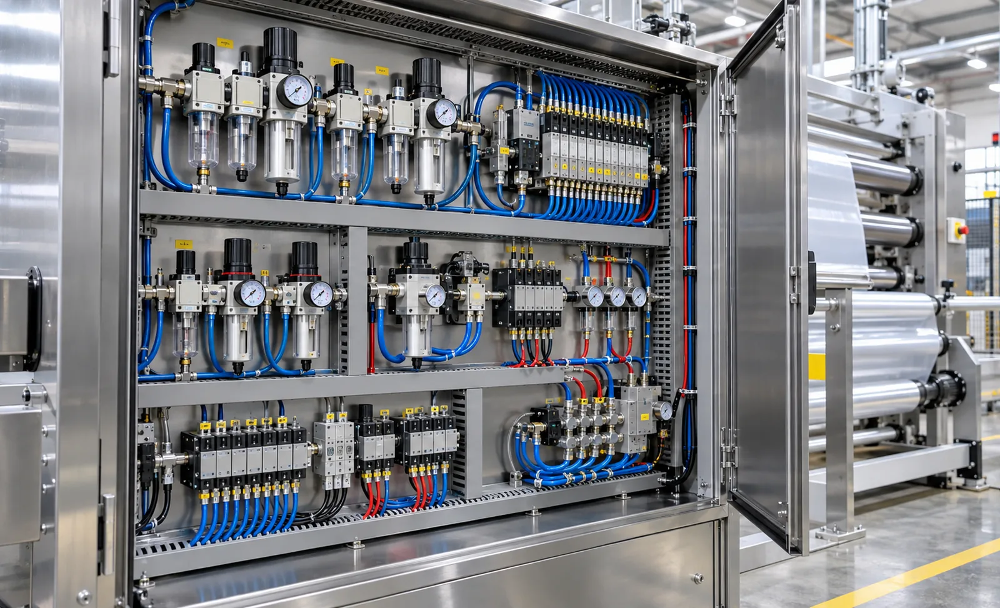
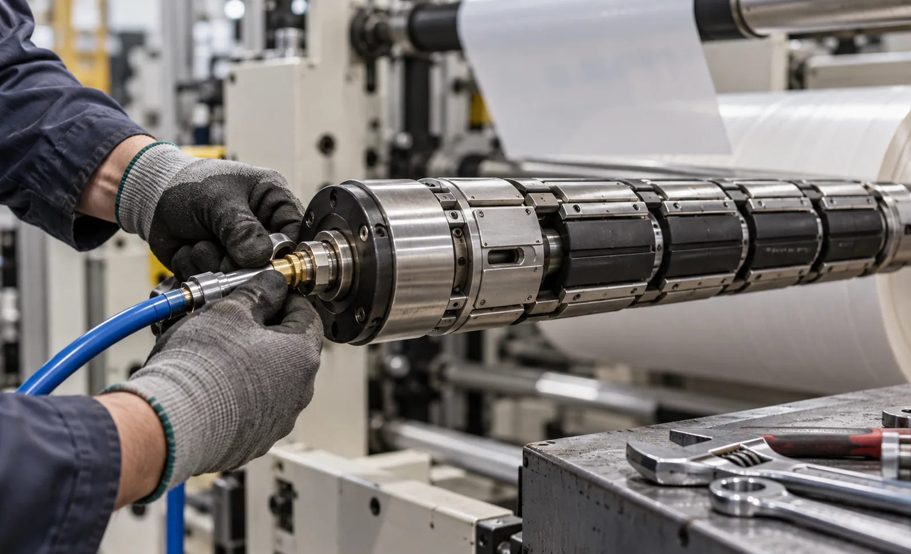

Published September 25, 2026 | By HDPTH Technical Editorial Team

Slitter rewinders are as much air machines as they are steel and drives. The unwind shaft grips the parent core, the chucks hold its ends, a clutch-brake sets tension, lay-on rollers press through cylinders, and the finished rolls sit on expanding air shafts. When pneumatics degrade, the symptoms appear as tension drift, core slip, telescoping rolls and unexplained stops — long before anyone blames the air system. Buyers who specify and maintain that subsystem deliberately avoid most of them.
Where the machine uses compressed air
The main pneumatic consumers, each with its own failure mode:
- Air shafts: bladder or lug types that expand to grip cores; their seals and bladders wear with every load and unload cycle, as covered in our air shaft selection guide.
- Safety chucks: carry the shaft ends and take full tension load; worn pockets cause shaft play and vibration.
- Clutch and brake units: pneumatic pressure sets unwind torque, so pressure stability is tension stability.
- Nip and lay-on cylinders: pressure regulators control web loading, tied to our nip pressure guide.
- Threading nozzles and trim removal: air assists that stop working quietly when pressure drops.
FRL units: the cheap insurance at the front of the circuit
Every pneumatic failure list starts with air quality. Water and particles wear shaft seals, gum valves and corrode cylinders; oil mist, where fitted, must match the manufacturer’s requirements — some modern valves are oil-free by design. The FRL unit sets filtration grade, working pressure and lubrication, and its flow capacity must match peak machine consumption, not average. Specify automatic drains, transparent bowls with guards, and a regulator with lockable settings so recipe pressures stay where they were set. Locating an FRL per major consumer group also lets maintenance isolate circuits during service.
Leak management as a routine, not a campaign
Leaks waste compressor energy, but on the machine itself they do worse: they lower working pressure until clutches lose torque and shafts lose grip. Manage them with a schedule — a monthly walk with ultrasonic detection or soap solution, tagged leaks, and a fix-by deadline — and log the count so the trend is visible. Rotary unions, quick couplings and hose runs near rotating parts are the usual repeat offenders. A machine designed with accessible routing and labelled circuits makes this routine realistic; a bird’s nest of hoses guarantees it will be skipped.
Building the preventive maintenance schedule
A usable PM plan names the task, the interval, the wear limit and the recorded result:
| Interval | Task | Wear limit / target |
|---|---|---|
| Daily | Check supply pressure, drain function, audible leaks at start-up | Pressure within setpoint; no new audible leak |
| Weekly | Drain and clean filter bowls, inspect shaft bladders, fittings and hoses | No cracked bladders, chafed hose or wet bowl |
| Monthly | Leak survey, check clutch/brake pad wear, cylinder rod seals, safety-chuck play | Pads and seals within supplier limits; zero tagged open leaks |
| Quarterly | Verify air-shaft grip pressure and clutch torque against baseline | Within stated tolerance of commissioning values |
| Annually | Overhaul consumable items, replace filter elements, recalibrate regulators | As per supplier’s parts-life table |
This schedule should come from the supplier as part of delivery, integrated with the machine-wide plan in our lubrication and preventive maintenance guide.

Specifying pneumatics for a new line?
Send HDPTH your rolls, cores, tensions and duty cycle. We will size the pneumatic circuits, state the FRL and maintenance requirements, and deliver the machine with a documented PM schedule and spares list.
Submit Your Project InquiryQuestions to put to every vendor
- Which components are pneumatic, and what air quality, pressure and flow does the site supply need to guarantee?
- What FRL specification is fitted, and is there an FRL per circuit group for isolation during service?
- What is the recommended PM schedule with wear limits for shafts, chucks, clutches and cylinders?
- What is in the recommended spares kit, what does it cost, and how many years will parts be available?
- Is operator training on air-shaft repair and leak detection included in commissioning?
Planning the aftermarket?
Read our guides on core chuck maintenance, differential rewind shafts and warranty and spare parts to align pneumatic maintenance with your total support plan.
Contact HDPTHFrequently asked questions
Which parts of a slitter rewinder depend on compressed air?
The unwind and rewind air shafts that grip the cores, the safety chucks that carry the shaft ends, friction clutches and brakes that set unwind tension, pneumatic cylinders on lay-on and nip rollers, web-threading air nozzles, and actuators on trim removal. Loss of air at any of these stops production or degrades roll quality, which is why pneumatic reliability belongs in the purchase conversation, not just the service manual.
What does an FRL unit do, and why does it matter so much?
The filter–regulator–lubricator trio conditions the supply air: the filter removes water and particles, the regulator sets the working pressure, and the lubricator feeds oil where components need it. Air shafts and chucks fail early when run on wet, dirty air, so the FRL specification — filtration grade, drainage type, flow capacity — matters more than its price. Automatic drains and a visible filter bowl keep the protection working without depending on operator diligence.
How should a plant manage air leaks on a converting line?
Walk the machine with an ultrasonic leak detector or soapy water on a scheduled basis, tag every leak and fix within an agreed window, and track the count trend. Leaks cost compressor energy and, more importantly, drop system pressure, which lowers clutch and shaft performance before anyone sees a fault. Rotary unions and hose fittings near rotating parts are the usual repeat offenders.
What should a pneumatic preventive maintenance schedule include?
Daily visual checks of pressure and drain function; weekly cleaning of filter bowls and inspection of shaft bladders and fittings; monthly checks of clutch brake pad wear, cylinder rod seals and safety-chuck wear; and periodic measurement of air-shaft grip pressure against its baseline. Each task needs an interval, an owner, a recorded result and a defined wear limit so replacement is planned rather than reactive.
What should be in the spare parts kit, and what maintenance terms should buyers expect?
At minimum: shaft bladder or lug repair kits for every shaft type, FRL filter elements and bowls, seals for cylinders and rotary unions, clutch friction elements, solenoid valves and the common fittings and hose sizes. On the contract, ask for a recommended spares list with prices at delivery, guaranteed availability years for key pneumatic components, and training for your team on shaft repair — downtime on air shafts is the most common pneumatic stoppage.
Sources
- ISO 8573 series: compressed air — contaminants and purity classes for supply air quality
- ISO 12100: risk assessment and risk reduction for machinery, including pneumatic circuits
- TAPPI: technical resources on converting equipment operation and maintenance
- INDA: association of the nonwoven fabrics industry — converting practice references
- OSHA: lockout/tagout and compressed-air safety guidance for servicing pneumatic equipment